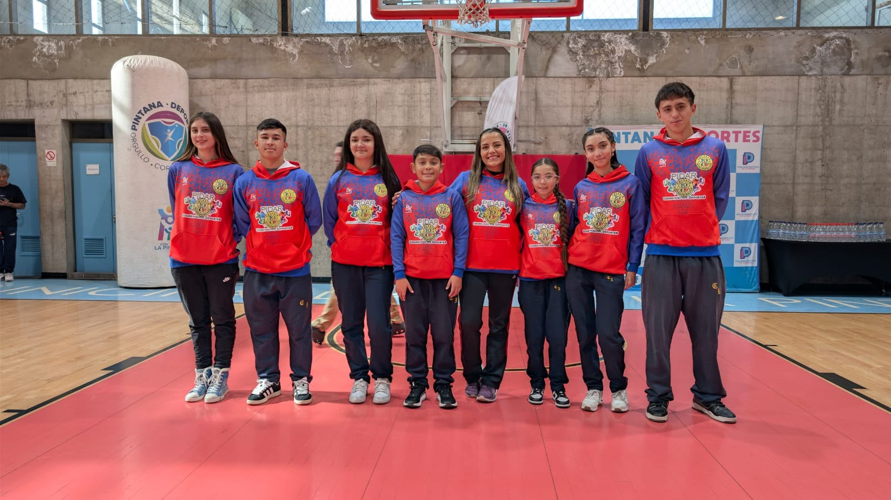

Metodología
Corresponsabilidad
Principio de corresponsabilidad entre el establecimiento, estudiantes, familias, docentes, UTP y organizaciones deportivas para asegurar una adecuada articulación entre la formación académica y deportiva.
Flexibilidad Académica
Implementación de medidas de apoyo pedagógico y flexibilidad académica que permitan compatibilizar entrenamientos, competencias y representaciones deportivas con la trayectoria escolar.
Logro de Objetivos de Aprendizaje
Resguardo del cumplimiento del Currículum Nacional mediante evaluaciones pertinentes, estrategias de recuperación y acompañamiento pedagógico permanente.
Sustento Legal
Programa basado en la normativa educacional y deportiva chilena, promoviendo inclusión, equidad, igualdad de oportunidades y una educación de calidad.

Resultados 2024–2025
Indicadores y avances del programa en su último bienio.
Hitos del programa
Diseño metodológico
Construcción del modelo PIDAR junto a equipos multidisciplinarios de educación y deporte.
Piloto en 2 colegios
Primer ciclo de implementación y evaluación con establecimientos pioneros.
Expansión regional
Incorporación de nuevas regiones y firma de convenios con instituciones deportivas.
Formación docente
Programa de 12 talleres formativos para docentes de establecimientos adscritos.
Consolidación del modelo
Publicación de resultados y consolidación del modelo PIDAR como referencia nacional.
Contáctanos
Cuéntanos quién eres y te contactaremos a la brevedad.